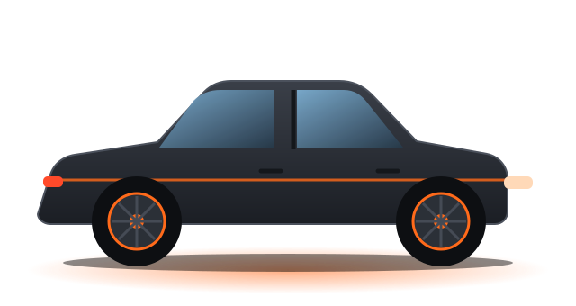
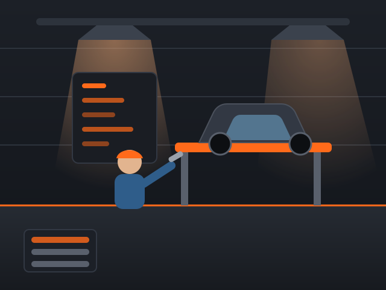
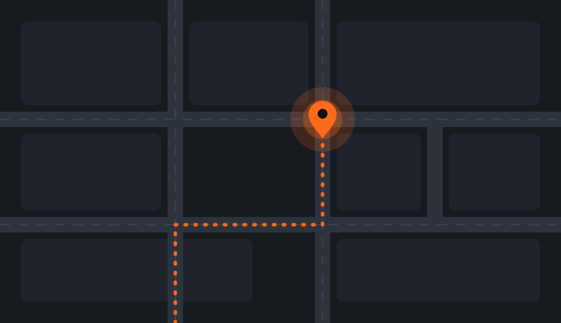

Автосервис в Москве · работаем с 2012 года
Ремонт и обслуживание авто с гарантией до 12 месяцев
Диагностируем, называем точную цену до начала работ и делаем ремонт в срок. Легковые авто всех марок: от планового ТО до сложного ремонта двигателя.
- 12 лет на рынке
- 12 мес. гарантия на работы
- 0 ₽ диагностика при ремонте

Услуги автосервиса: что мы ремонтируем
Выполняем весь комплекс работ для легковых автомобилей — от диагностики до сложного ремонта. Не нашли нужную услугу? Позвоните, подскажем.
-
Компьютерная диагностика
Находим причину неисправности, а не гадаем. Выдаём отчёт со списком работ и ценами.
от 1 200 ₽ -
Ремонт двигателя
Замена ремня и цепи ГРМ, ремонт ГБЦ, устранение течей и перегрева.
от 3 500 ₽ -
Ремонт ходовой части
Амортизаторы, рычаги, сайлентблоки, ступицы. Убираем стуки и «плавающий» руль.
от 1 500 ₽ -
Тормозная система
Замена колодок, дисков и жидкости. Тормоза — это безопасность, делаем без компромиссов.
от 1 800 ₽ -
Замена масла и ТО
Плановое обслуживание по регламенту производителя. Сервисная книжка сохраняется.
от 900 ₽ -
Автоэлектрика
Поиск и устранение неисправностей проводки, генератора, стартера, света.
от 1 500 ₽ -
Кондиционеры и климат
Заправка, диагностика утечек, чистка и антибактериальная обработка салона.
от 2 200 ₽ -
Шиномонтаж и сход-развал
Сезонная замена, балансировка и точная регулировка углов установки колёс.
от 1 600 ₽
Почему выбирают наш автосервис
Мы не удивляем клиентов неожиданными счетами. Всё прозрачно: цена, сроки и гарантия фиксируются до начала работ.
-
Гарантия до 12 месяцев
Отвечаем за результат письменно. Если что-то пошло не так, исправим бесплатно.
-
Цена не меняется
Стоимость согласовывается до ремонта. Дополнительные работы — только с вашего согласия.
-
Ремонт в срок
Называем реальные сроки и соблюдаем их. Запчасти заказываем заранее, подъёмник готов к вашему приезду.
-
Оригинал и качественные аналоги
Работаем с проверенными поставщиками. Предлагаем варианты по цене и показываем разницу.
-
Фотоотчёт по ремонту
Присылаем фото и видео неисправностей и результата. Старые детали возвращаем по просьбе.
-
Опытные мастера
Средний стаж мастеров — более 8 лет. Регулярно проходят обучение и работают на современном оборудовании.
Цены на ремонт и обслуживание автомобиля
Ориентировочная стоимость для легковых авто. Точную цену назовём после осмотра — она не изменится в процессе ремонта.
| Услуга | Срок | Цена |
|---|---|---|
| Компьютерная диагностика | от 30 мин | от 1 200 ₽ |
| Замена масла и фильтра | от 40 мин | от 900 ₽ |
| Замена тормозных колодок (ось) | от 1 часа | от 1 800 ₽ |
| Замена ремня ГРМ (комплект) | от 4 часов | от 6 500 ₽ |
| Замена амортизаторов (ось) | от 2 часов | от 2 800 ₽ |
| Сход-развал | от 1 часа | от 2 000 ₽ |
| Заправка кондиционера | от 1 часа | от 2 200 ₽ |
| Сезонный шиномонтаж (4 колеса) | от 1 часа | от 1 600 ₽ |
Цены указаны без стоимости запчастей и расходных материалов. Диагностика бесплатна при ремонте у нас.
Узнать точную стоимостьКак проходит ремонт: 4 простых шага
Вы всегда знаете, что происходит с вашим автомобилем и сколько это стоит.
-
Заявка
Оставьте заявку на сайте или позвоните. Перезвоним в течение 15 минут и подберём удобное время.
-
Осмотр и диагностика
Мастер проверяет автомобиль, находит причину неисправности и составляет смету.
-
Согласование и ремонт
Вы утверждаете цену и сроки. Только после этого мы начинаем работу и присылаем фотоотчёт.
-
Выдача с гарантией
Показываем выполненные работы, оформляем гарантию и возвращаем заменённые детали.

О нашем автосервисе
АвтоПрофи — это команда мастеров, которые ремонтируют автомобили с 2012 года. Мы выросли из небольшого бокса в современный сервис с 6 подъёмниками и собственным складом расходных материалов.
Наш принцип простой: говорить клиенту правду. Если ремонт не нужен — так и скажем. Если можно сэкономить без вреда для безопасности — предложим варианты.
- 12 лет работы
- 15000 обслуженных авто
- 6 подъёмников
- 98% клиентов возвращаются
Отзывы клиентов автосервиса
Нам доверяют владельцы авто разных марок. Вот что говорят о работе наши клиенты.
-
Приехал с проблемой «стучит подвеска». Диагностику сделали бесплатно, назвали цену и сроки. Забрал машину в тот же день, всё как договаривались.
Алексей К.Kia Rio, ремонт ходовой -
Понравилось, что присылали фото с подъёмника и объясняли, что и почему менять. Лишнего не навязали, итоговая цена совпала со сметой.
Марина С.Hyundai Solaris, замена тормозов -
Обслуживаю здесь машину уже третий год. Записываюсь заранее, жду минимум. Ни разу не было повода пожаловаться.
Дмитрий В.Skoda Octavia, плановое ТО
Частые вопросы об автосервисе
Собрали ответы на вопросы, которые клиенты задают чаще всего.
Сколько стоит диагностика автомобиля?
Компьютерная диагностика стоит от 1 200 ₽. Если вы делаете ремонт у нас, диагностика бесплатна.
Даёте ли вы гарантию на работы и запчасти?
Да. Гарантия на работы — до 12 месяцев, на запчасти — по условиям производителя. Все обязательства прописываются в заказ-наряде.
Можно ли привезти свои запчасти?
Можно. В этом случае гарантия действует на работу, а на детали — по условиям продавца. Также мы можем подобрать оригинальные запчасти или качественные аналоги.
Сколько времени занимает ремонт?
Замена масла — от 40 минут, замена тормозных колодок — от 1 часа, сложный ремонт — от 1 дня. Точные сроки называем до начала работ.
Нужно ли записываться заранее?
Рекомендуем записаться: так мы подготовим подъёмник и запчасти, и вам не придётся ждать. Запись занимает минуту — оставьте заявку на сайте или позвоните.
Как узнать стоимость ремонта заранее?
После осмотра мастер составляет смету. Вы согласовываете цену и сроки, и только после этого мы начинаем работу. Без вашего согласия стоимость не меняется.
Запишитесь в автосервис за 1 минуту
Оставьте телефон — перезвоним в течение 15 минут в рабочее время, ответим на вопросы и подберём удобное время визита.
- Бесплатная консультация мастера
- Диагностика бесплатна при ремонте
- Цена фиксируется до начала работ
Как нас найти
Мы находимся рядом с метро, есть бесплатная парковка для клиентов.
- г. Москва, ул. Примерная, 12, стр. 1
-
Пн–Сб: 09:00–20:00
Вс: 10:00–18:00 - +7 (495) 000-00-00
